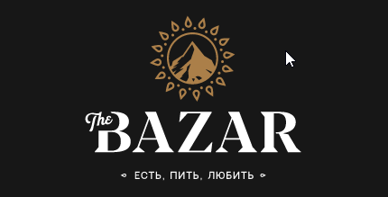
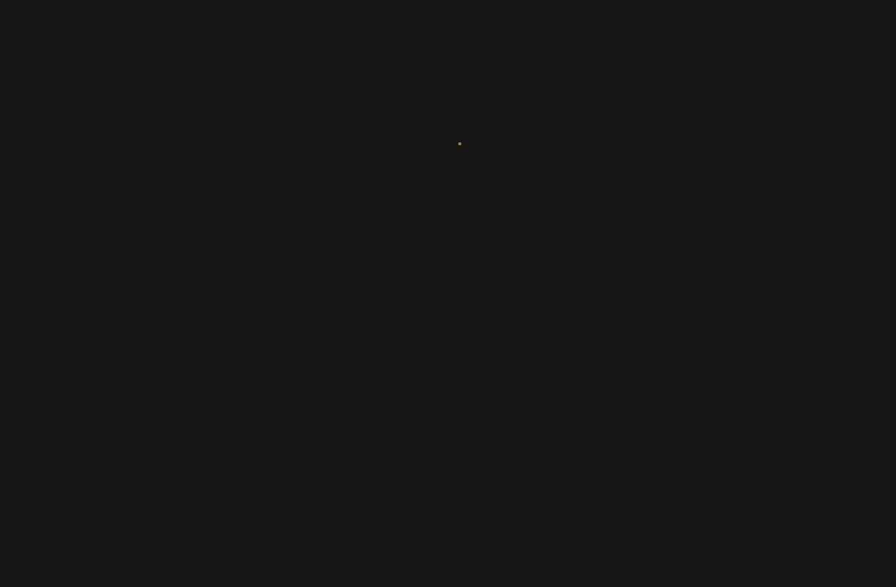
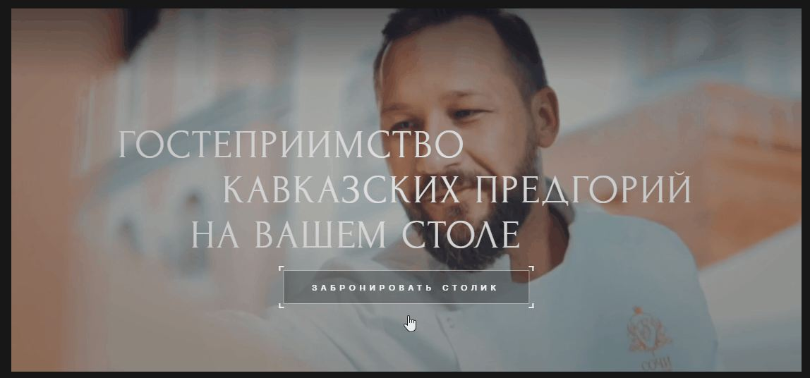
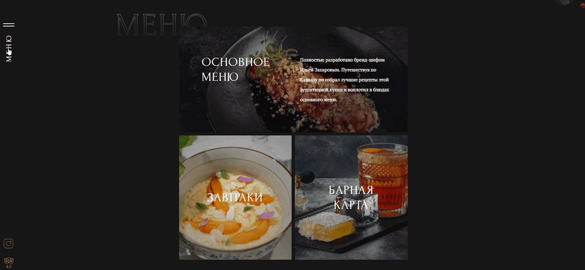
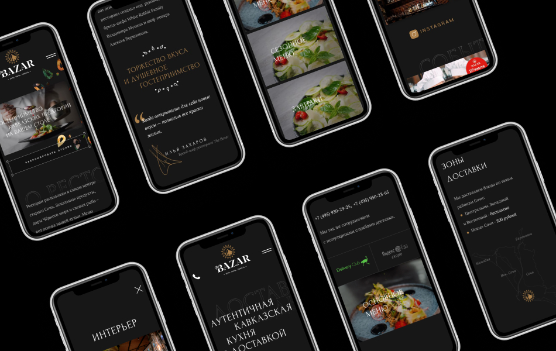
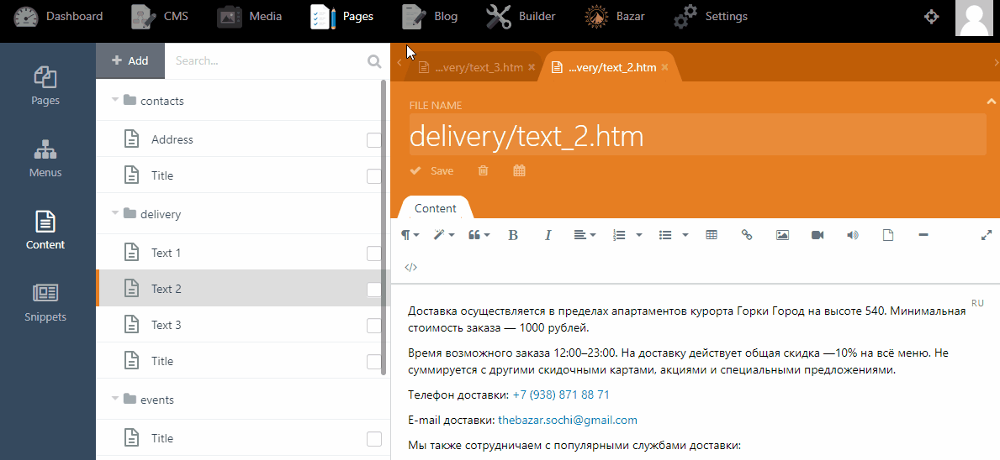

О проекте
Клиент
The Bazar — семейный ресторан кавказской кухни в самом центре горнолыжного курорта «Красная Поляна». Меню умело сочетает традиционные кавказские блюда и авторские салаты из разнообразных местных трав, сезонных фруктов и овощей в гастрономической подаче бренд-шефа Ильи Захарова.
Илья — человек в ресторанном бизнесе известный: член Федерации профессиональных поваров и кондитеров России, соавтор более чем 30 книг, финалист конкурса Лучших молодых поваров России «Серебряный треугольник». Отвечает за высокую кухню в ресторанах «Казино Сочи», в подобных местах доверяют только профи.
Задача
Сделать адаптивный сайт-визитку для ресторана The Bazar, показать меню, новости, рассказать о доставке из заведения. Сайт должен поддерживать отображение контента на нескольких языках.
Дизайн
Визуальный стиль ресторан гармонирует с меню — восточное убранство, горы Кавказа на логотипе, авторская подача при декорации.
Дизайн сайта держится в том же мотиве: тёмный фон, объёмные отступы между блоками, фоновые графические элементы и прелоадер в восточном стиле с неспешной динамикой при прокрутке, небольшие анимации на кнопках при наведении курсора.





Административная часть
В качестве админки использовали любимую нами OctoberCMS. Работает быстро, расширяется легко, на русский переведена, предельно понятна, бесплатна, проста и прекрасна.
В административной части управляется весь текстовый контент, создаются и редактируются контактные данные, файлы с меню, новости и галерея.

Мультиязычность
Изначально клиент просил сделать поддержку английской версии и управление её контентом из административной части, потому что гости иностранные бывают регулярно и в Красной Поляне, и в The Bazar, поэтому меню и тексты на сайте будут на 2 языках.
Мы пошли немного дальше, и внедрили возможность создавать дополнительные языковые версии сайта из админки, без привлечения программиста. Добавляете новый язык, заполняете контент, и всё, готово, немецкая или итальянская версия сайта готова.
Результат
Простой, но при этом безумно красивый сайт, который отражает душевность и колорит кавказской кухни, и отлично смотрится на мобильных устройствах на любом языке.
Заходите на сайт, гостем будете!